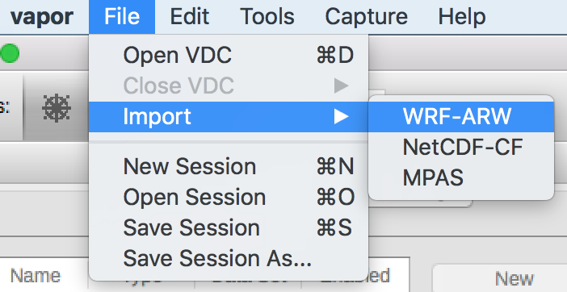

Getting Data into Vapor3¶
Importing data vs Loading VDC¶
Vapor can directly read the data formats listed below. We call this importing data.
- NetCDF files that follow the CF Convention (NetCDF-CF)
- WRF-ARW
- MPAS
NetCDF-CF, WRF, and raw binary files can also be converted into a Vapor Data Collection (VDC). This method which has advantages described below. MPAS is currently not supported for VDC conversion.
Users can either load VDC, or import their data through Vapor’s File menu.
| Loading a .vdc file | Importing data | |

|
or |  |
Vapor Data Collection (VDC)¶
One of Vapor’s strengths is the VDC data format, which allows users to render their data at different levels of compression. Viewing compressed data reduces the time a rendering takes to complete, improving interactivity.
With VDC, users can configure their renderers quickly at low fidelity, and then turn off compression for their final renderings. Being able to interact with your data becomes important when rendering takes many seconds, minutes, or even hours to complete.
Creating a VDC is a two step process using command line tools.
Step 1) Create a .vdc metadata file that describes the structure of your data Step 2) Apply the wavelet transform to populate your VDC
This process is supported with WRF-ARW, NetCDF-CF, and raw binary data <binary>. Read on to find instructions for your data type.
WRF-ARW data to VDC¶
The two tools for converting WRF-ARW into VDC are wrfvdccreate and wrf2vdc. If these commands are issued by themselves, advanced options will be listed to the terminal. These advanced options are usually not necessary.
Step 1: Create .vdc metadata file¶
In the directory where Vapor 3 is installed, there is a command line utility called wrfvdccreate. Issue this command in a terminal (Unix) or command prompt (Windows), followed by your WRF-ARW files, and finally the name of the .vdc file to be written.

Creating a .vdc metadata file with wrfvdccreate.
Step 2: The wavelet transform¶
Once we have a .vdc file, the metadata has been recorded and we can apply the wavelet transform. From Vapor 3’s installation directory, issue the command wrf2vdc, followed by your WRF-ARW files, and finally followed by the .vdc file that was made in Step 1.

Applying the wavelet transform to WRF-ARW data with wrf2vdc
NetCDF-CF data to VDC¶
If your NetCDF data follows the CF conventions, then the process of converting it to VDC is nearly identical to the WRF conversion process. The commands that will be used are named cfvdccreate for .vdc metadata creation, and cf2vdc for applying the wavelet transform.
In order for NetCDF data to be compliant with the CF conventions, the following conditions must be met for the file’s vector, scalar, and coordinate variables.
Coordinate Variables¶
What is a “Coordinate Variable”? From the CF1.X Definition:
We use this term precisely as it is defined in section 2.3.1 of the NUG. It is a one- dimensional variable with the same name as its dimension [e.g., time(time)], and it is defined as a numeric data type with values that are ordered monotonically. Missing values are not allowed in coordinate variables.
The axis attribute¶
Each coordinate variable must have an axis attribute as follows:
Xcoordinate variables must contain anaxisattribute that is equal to0.Ycoordinate variables must contain anaxisattribute that is equal to1.Zcoordinate variables must contain anaxisattribute that is equal to2.Timecoordinate variables must contain anaxisattribute that is equal to3.
The units attribute¶
Coordinate variables for the X, Y and Z axes may have an attribute that defines the units they are measured in. Some suitable values for the units attribute are:
- degree_east
- meters
- m
- km
Optionally, the Time coordinate variable may have a units attribute which must be identifiable by the Udunits library. Suitable units attributes include:
- seconds
- s
- days since 0001-01-01 00:00:00
- seconds since 2011-01-01 00:00:00
Vertical Coordinates¶
Need to elaborate. We currently support ocean_s_coordinate_g1 and ocean_s_coordinate_g2 when the vertical coordinate is dimensionless. What about other cases?
Missing Values¶
Variables with missing data values must have the attribute _FillValue or missing_value specified. See section 2.5.1 of the CF 1.6 specification for more information.
Step 1: Create .vdc metadata file¶
Once your NetCDF files have attributes that make them CF compliant, you may produce VDC by doing the follwing.
In the directory where Vapor 3 is installed, there is a command line utility called cfvdccreate. Issue this command in a terminal (Unix) or command prompt (Windows), followed by your NetCDF-CF files, and finally the name of the .vdc file to be written.
Typing the command cfvdccreate alone will display the optional arguments that may be used, but these are usually not necessary.
Step 2: The wavelet transform¶
Raw binary data to VDC¶
Converting raw binary data to VDC is the most complex process for converting data in Vapor 3. With WRF-ARW and NetCDF-CF data, Vapor can read the files an extract metadata that describes the grid that the data exists within. With raw binary data, we need to define that metadata ourselves in step 1.
Step 1: Create .vdc metadata file¶
To make a VDC from scratch, users need to carefully read all options in the vdccreate utility, and define their .vdc metadata file accordingly.

Command line arguments for vdccreate, seen by issuing the command without any arguments
Step 2: The wavelet transform¶
Now that a .vdc metadata file has been created, the wavelet decomposition can take place. Each variable must be converted individually with raw2vdc, and this must be done one timestep at a time.

Command line arguments for raw2vdc wavelet transform, seen by issuing the command without any arguments